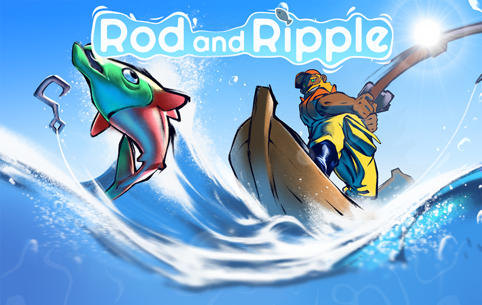
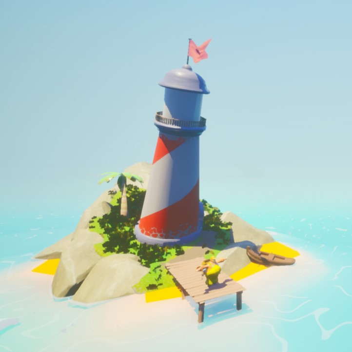
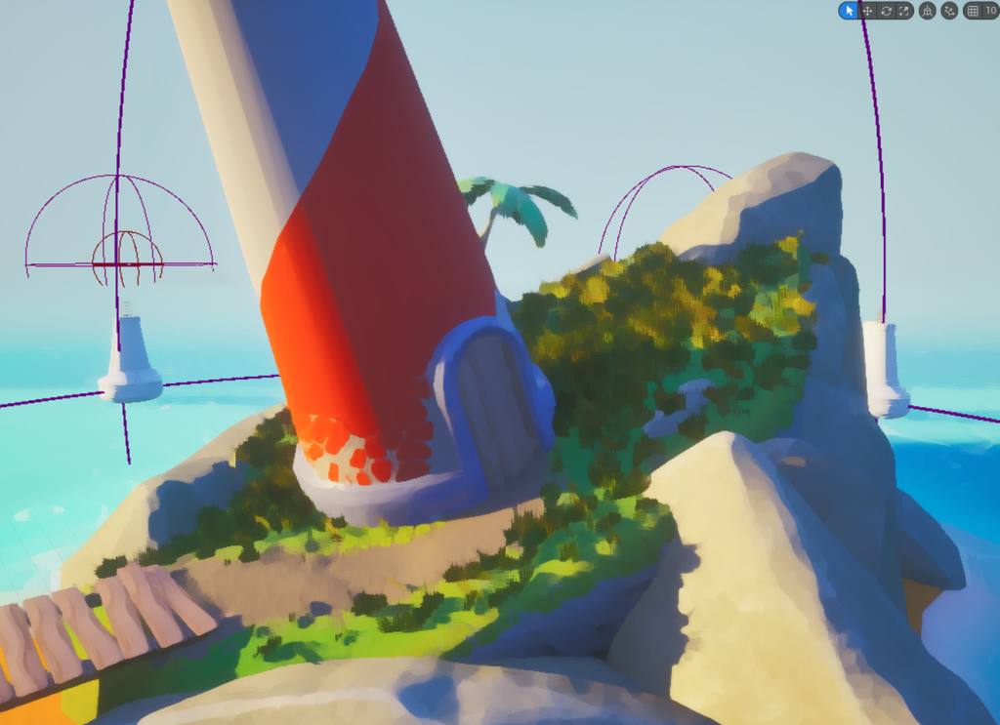
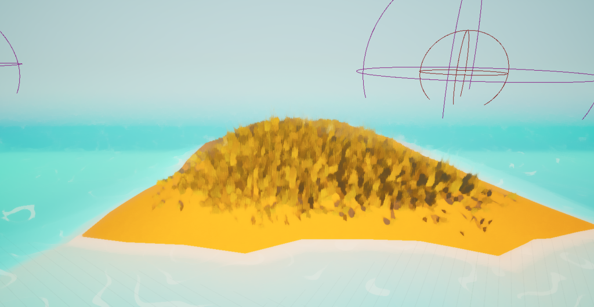
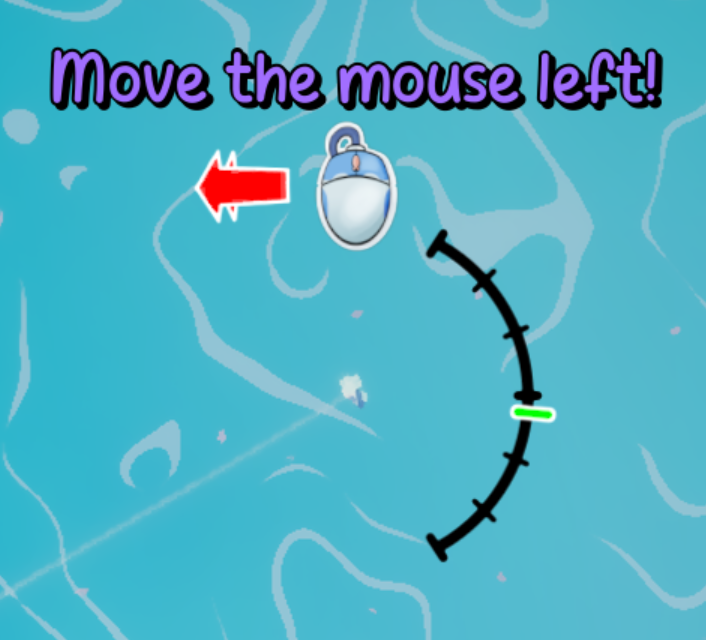
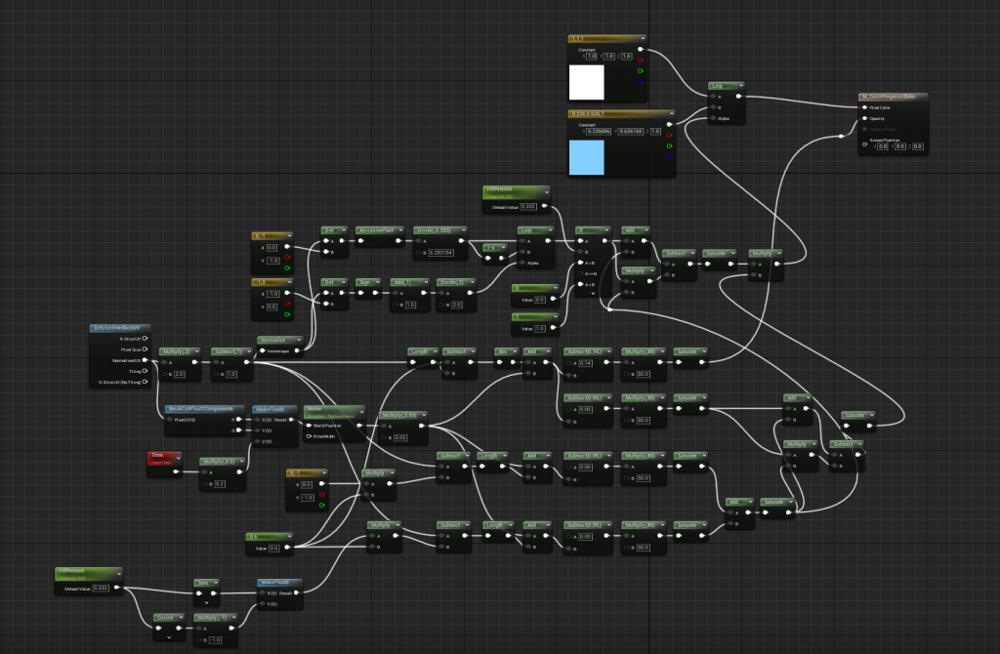
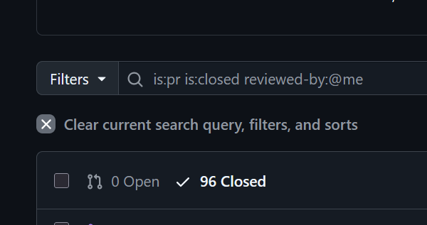
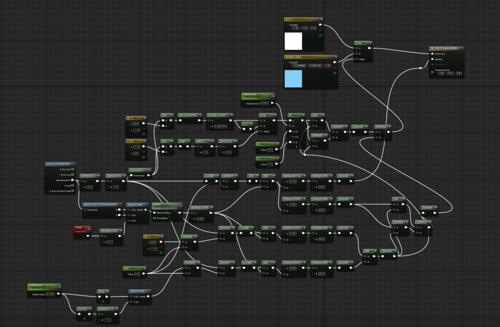
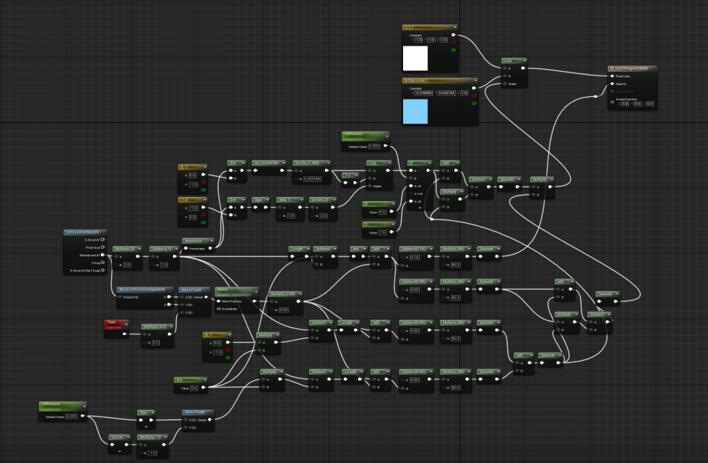

[
cassette - portfolio
][
project - Rod and Ripple
]

my team's submission for the Collaborative Games Development module 2025 at Staffordshire University.
"A fun fishing game where you catch fish, sell them, meet the weekly quota, upgrade your equipment, and fill out the AquaDex! The further out you adventure, the stranger and more difficult fish you may encounter, but be wary of sharks at night and in deeper waters..."

the home island
i took on several roles in this project - technical artist (responsible for importing and managing 3D and 2D assets, shader development, and post-processing and effects), programming/tech lead (building several game systems, organising tasks, checking in with the tech team, managing the git repository and servicing most merge requests), UI programmer, and VFX artist, and liasing between the tech, design, and art teams.
this was a super challenging project, not helped by being in several roles at once. however, i still really enjoyed it and i'm super proud of the end product. i really developed both my technical skills as a tech artist, as well as my team-work and leadership skills with this project. i got lots of experience with managing and organising tasks according to my tech team's preference and skills, and estimating how long different tasks would take (and which should/could be cut).
i spent a lot of time communicating with the design and art leads, as well as the teams themselves, and our producer who did a great job of keeping the project on track overall.
in terms of UI, i built the dynamic compass at the top of the screen, the time-of-day indicator in the top right (which involved some clever shader work combined with a circular texture painted by the concept art lead Louis), as well as internal and cosmetic work on various menus.
by far my largest area of contribution was technical art. i managed importing assets from the 3D artists, including establishing a shared pipeline and to ensure that assets matched and looked coherent when combined in game. i developed a standard PBR shader with albedo, normal, and roughness-AO-metallic texture inputs. i also managed generating LODs for improving performance.
i, along with contributions from Kaz, developed the stylised water shader using a combination of simplex and voronoi noise patterns and math. a significant amount of consideration went into minimising the rendering cost of the water, and in the end its frame-time cost is minimal.
i also developed the post-processing effects. this involved a Kuwahara filter to give the game a dreamy, soft, painterly look, as well as appropriate lighting and colour correction. the post-processing effects really bring the game together and set the atmosphere. i implemented the Kuwahara filter in shader code (not just Unreal material nodes) in order to maximise performance, as well as experimenting with parameters to balance intensity of the effect with rendering cost.
late in development i added foliage to the islands in the game, as some additional set dressing. this was aided by excellent work from Cloud, who provided a set of masked grass texture variations which i then fed into Unreal's foliage system. i made a mixture of green and yellowish grass, tall and short, sparse and dense, to give variation.
the home island was quite a fun challenge to work on. we wanted to have the flag and the palm tree sway in the wind. in order to do this, i asked Kaz (who modelled and textured the island) to add some vertex colours to the original mesh. i then used these to blend some noise values which applied displacements to the mesh in engine (i.e. so that only the tree and the flag moved). the same noise effect was applied to the grass foliage, such that their movement matches the tree.


i was also responsible for creating the map itself, with its islands and deep areas, in collaboration with the art and design teams.
on the standard tech side, i made the day-night system and the quota system, which couple together quite closely (the quota works on a daily and weekly cycle). the day-night manager controls the sky shader and sun position and colour (both of which i was also responsible for), as well as the light in the lighthouse and talking to the UI. the quota manager keeps track of whether the player has met the required amount of money from selling fish each week.
i also developed the fish spawning manager, which handles... spawning fish, obviously. it keeps the population of fish around the player roughly constant (the entire ocean doesn't have to be full of fully animated, moving, performance-reducing fish), and selects fish species to spawn according to rules about ocean depth, map region (north/south/east/west), and time of day.

i made parts of the fishing mechanic itself - specifically i worked on the math and movement of fish and UI, since vector math is rather my specialism. the behaviour itself, as well as a lot of the UI was done by Leo (who also did sound design and composed the awesome music for the game!). i'm particularly happy with the one of the shader-powered UI elements i created for this: the circular catch meter:

shader powering the catch meter
as i mentioned before, i did a lot of task-organising as well as git management. looking at the git history says that i handled 96 out of the 216 total pull requests! in total we were only 6 commits away from 1000 by the end of the project.

finally, here's some gameplay! you can also download the game and play it yourself from the Itch page linked above.


 
